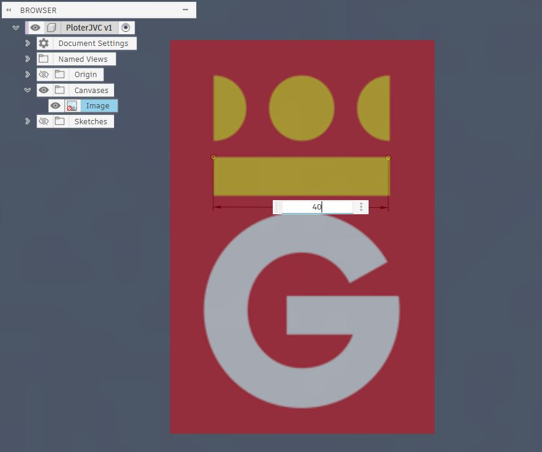
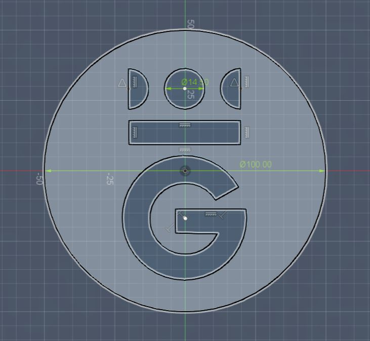
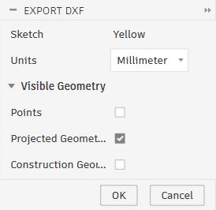
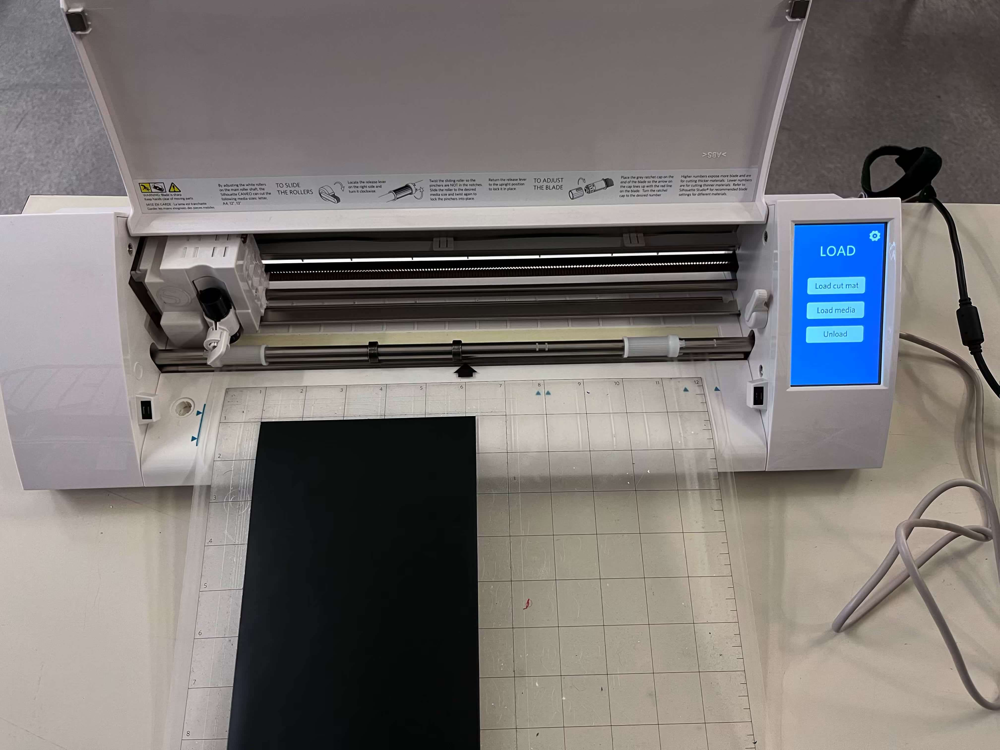
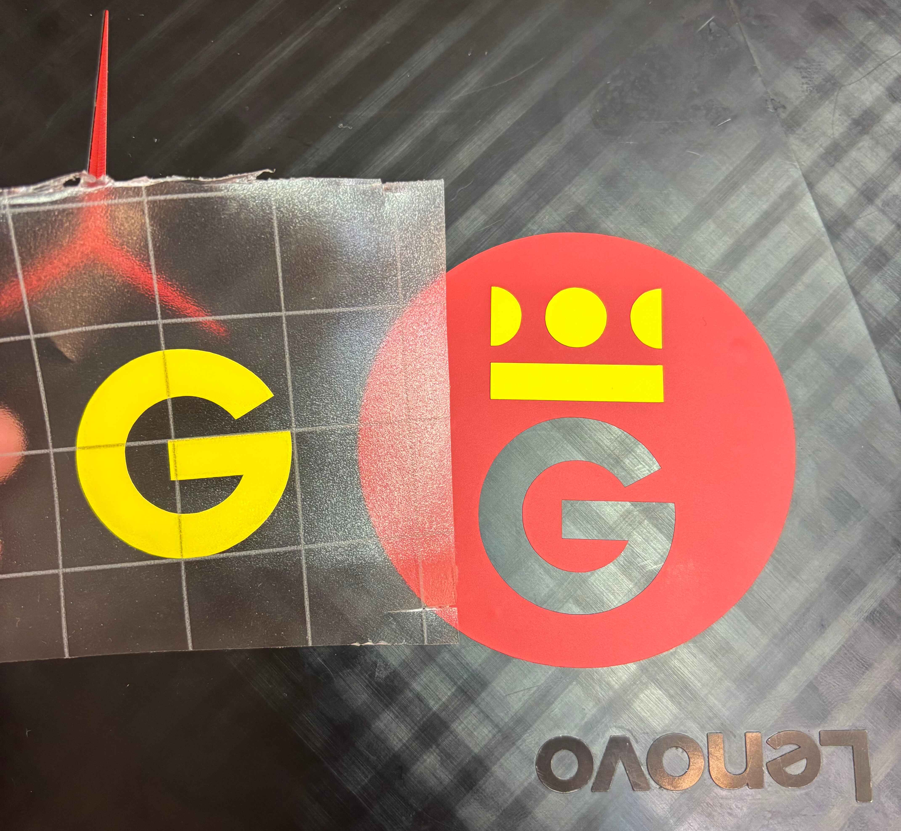
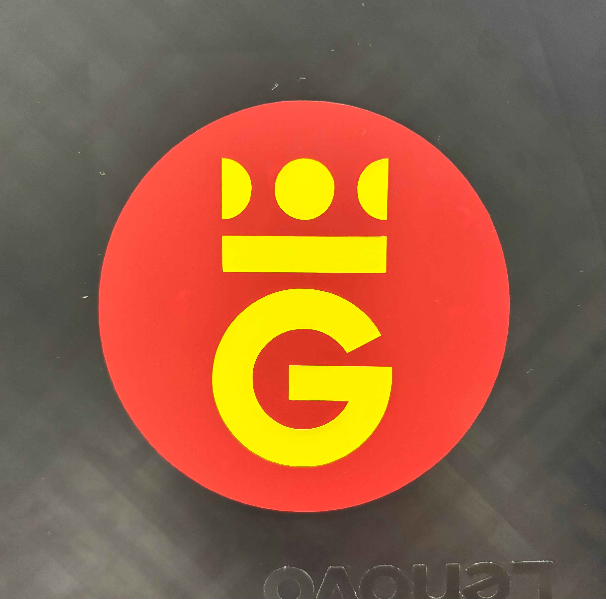
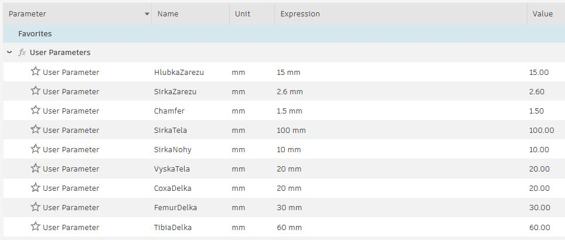
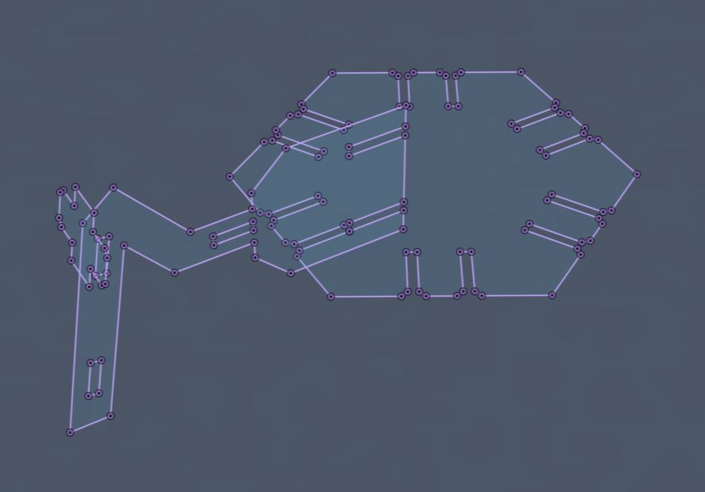
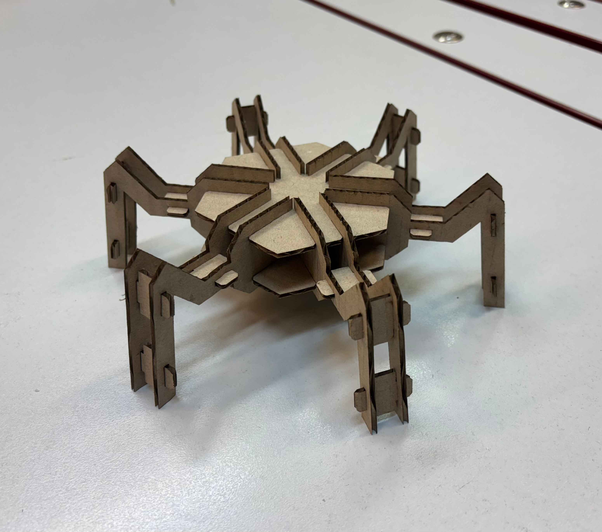

2. týden: 2D návrh a řezání
Během druhého týdne bylo úkolem vyřezat samolepku na řezacím plotru a navrhnout a vyřezat na laserové řezačce stavebnici z kartonu.
Tvorba samolepky
Rozhodl jsem se vytvořit samolepku nového loga mého rodného města, Hradce Králové. Pro tvorbu vektorové grafiky jsem použil program Fusion 360.
Nejprve jsem pomocí funkce Canvas vložil obrázek loga do pracovního prostoru. Aby rozměry samolepky odpovídaly realitě, využil jsem funkci Calibrate (kliknout pravým tlačítkem na Canvas v browseru). Stačilo vybrat dva body na logu a zadat jejich skutečnou vzdálenost, čímž se celý obrázek změnil na požadované rozměry.

V rovině obrázku jsem vytvořil nový náčrt, ve kterém jsem logo obkreslil. Použil jsem k tomu následující nástroje:
- Line - pro rovné úsečky
- Circle - pro kružnice
- Three Point Arc - pro půlkružnice a zaoblené části písmene G
Původně jsem písmeno G obkrselil pomocí nástroje Fit Point spline, musel jsem ho však nahradit tříbodovými oblouky. Při exportu do formátu .dxf a následném importování do programu Inkscape se totiž spline křivky nezobrazovaly. Jelikož tvar písmene G není tvořen přesnými kružnicemi, není obkreslení přesné.

Jelikož bude samolepka tříbarevná, vytvořil jsem tři samostatné náčrty pojmenované podle barev. Do každého z nich jsem z původního náčrtu promítnul funkcí Project pouze ty křivky, které ohraničují danou barvu. Jednotlivé barvy jsem následně exportoval ve formátu .dxf.

Soubory jsem přenesl do školního počítače, ale Silhouette Studio původní .dxf z Fusion 360 deformovalo. Problém vyřešilo otevření souborů v Inkscape a jejich opětovný export do .dxf. Po importu bylo pouze nutné opravit měřítko, aby rozměry odpovídaly návrhu (import změnil rozměry, předchozí úprava velikosti Canvasu byla tedy zbytečná).
Vinylovou fólii jsem upevnil na adhezní řezací podložku a vložil do plotru.

Poznámka: Obrázek zapůjčen od Šimona Pecháčka.
Po dokončení řezu jsem ze samolepky odstranil přebytečný materiál a pomocí transferové fólie jsem přenesl logo na víko notebooku. Kvůli nedostupnosti bílé fólie jsem nakonec vytvořil pouze dvoubarevnou variantu.


Stavebnice z kartonu
Abych se držel tématu mého závěrečného projektu, dal jsem si za úkol vytvořit stavebnici hexapoda. K vytvoření vektorové grafiky jsem opět použil Sketch ve Fusion 360.
Kvůli neznámé tloušťce kartonu a pro účely procvičení jsem parametrizoval všechny klíčové rozměry. Aby model na změny parametrů reagoval správně, udělal jsem všechny náčrty plně definované (fully constrained). Díky tomu lze nyní snadno upravovat rozměry otvorů, délky článků nohou i velikost základny.


Hotové náčrty jsem exportoval do formátu .dxf a následně je upravil v programu Inkscape podle tutoriálu Filipa Korfa.
Při prvním pokusu o řezání stroj vynechal polovinu dílů. Problém vyřešilo označení všech objektů a použití funkce Zrušit seskupení. Pro řezání kartonu jsem nakonec použil nastavení: výkon 45 %, rychlost 100 %, frekvence 500 Hz. Po několika zkušebních řezech jsem šířku spojovacích otvorů zvolil 2,4 mm.
